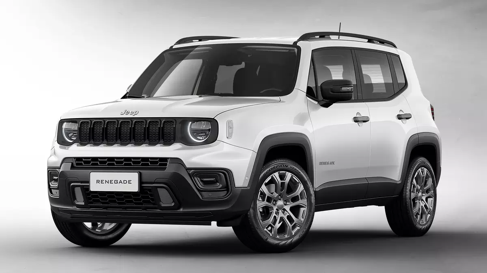

Sobre a linha JEEP

JEEP RENEGADE
O Jeep Renegade 2022 é apenas um dos diversos crossovers compactos à disposição dos consumidores no mercado brasileiro, todavia, tem pontos que merecem destaque. O modelo chegou por aqui no ano de 2015 e se sobressaía por ser o único da categoria a dispor de motorização turbodiesel e sistema de tração nas quatro rodas. Mesmo com a saída desse motor, a tração integral continuou com o 1.3 turbo
Em 2019, o Jeep Renegade trouxe as primeiras grandes novidades para a gama do utilitário-esportivo. E, nesse ano, o modelo mudou mais um pouco para se manter atual no mercado enquanto esperava por mais novidades.
Elas chegaram em fevereiro de 2022, trazendo um visual mais moderno, com faróis full LED de série. Além disso, recebeu novos equipamentos e, como citado, um novo motor turboflex.